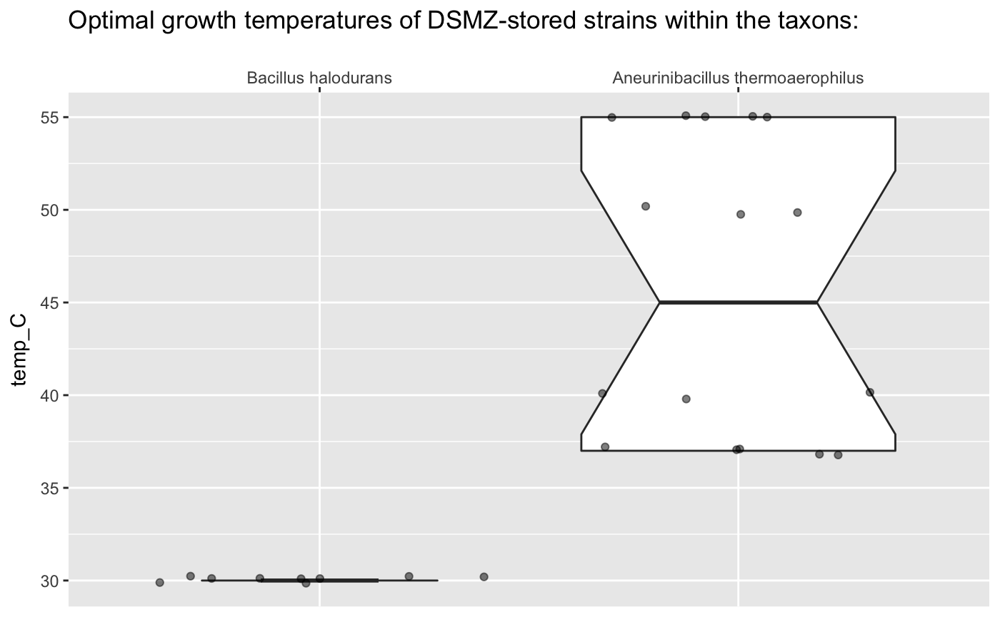

vignettes/BacDive-ing-in.Rmd
BacDive-ing-in.RmdThe BacDive website lets you easily search for all their strains within a given taxonomic unit. For example, searching for “Bacillus” returns a paginated list of strains that you can then access, download and analyse further. All manual, though. BacDiveR automates this workflow:
library(BacDiveR)
taxon_1 <- "Bacillus halodurans"
Bac_data <- retrieve_data(searchTerm = taxon_1)
#> Downloading BacDive IDs 1112 to 23701 (but not necessarily contiguously):
#> 1112 1113 1114 1115 1116 1117 1118 1119 23692 23693 23694 23695 23696 23697 23698 23699 23700 23701Suppose we want to compare the optimal growth temperatures of strains from the taxon Bacillus halodurans with another one. retrieve_data() with its default searchType = taxon will get you all taxon data in a single (albeit large) list of dataframes. Feel free to take a break while the computers do some work for you:
taxon_2 <- "Aneurinibacillus thermoaerophilus"
At_data <- retrieve_data(taxon_2)
#> Downloading BacDive IDs 11385 to 11399 (but not necessarily contiguously):
#> 11385 11386 11387 11388 11389 11390 11391 11392 11393 11394 11395 11396 11397 11398 11399We wanted the growth temperatures, right? As with any other database field, you now need to determine its path within the list data structure that BacDiveR returned to you. Use either
Environment > Data viewer, orstr(Bac_data), orto find the $-marked path to the field of your interest. In our example, it’s $culture_growth_condition$culture_temp$temp, which we’ll now use to extract that field from all entries in our downloaded datasets.
Multiple steps are necessary here, which could easily result in hardly readable code if we used the regular assignment operator <-, intermediate variables and/or nested function calls. We will avoid this with the pipe operator %>%. It indicates that
Note the ~ .x prepended to the path $culture_growth_condition$culture_temp$temp! This is map()’s way of indicating that each element in the piped-in dataset will be accessed at that path.
library(magrittr)
extract_temps <- function(dataset, taxon_name) {
purrr::map(.x = dataset, .f = ~.x$culture_growth_condition$culture_temp$temp) %>%
unlist() %>%
as.numeric() %>%
data.frame(temp_C = ., taxon = rep(taxon_name, length(.))) %>%
return()
}
temperature_Bac <- extract_temps(Bac_data, taxon_1)
temperature_At <- extract_temps(At_data, taxon_2) Keep in mind, that in case of growth temperatures, a range may also be given (e.g. “28-32”). The above code turns a range into NA, but you could compute the mid-point / mean of such ranges.
Before visualising the data, we need to create a dataframe of the two datasets.
library("ggplot2")
rbind(temperature_Bac, temperature_At) %>%
ggplot(aes(x = taxon, y = temp_C)) +
geom_boxplot(notch = TRUE) +
geom_jitter(height = 0, alpha = 0.5)
And thus we find, that Aneurinibacillus thermoaerophilus contains strains with different growth optima (note the groups of data points), even up to the 50-something-°C-range as the thermo-part in its name suggest). On the other hand, all Bacillus halodurans strains known to BacDive were found to grow best at the lower temperature of 30°C. Thanks to the notch in Aneurinibacillus thermoaerophilus’s box, we can also say that there is a significant difference between the temperature ranges of these two taxons, even before digging into the numbers:
summary(temperature_Bac$temp_C)
#> Min. 1st Qu. Median Mean 3rd Qu. Max.
#> 30 30 30 30 30 30
summary(temperature_At$temp_C)
#> Min. 1st Qu. Median Mean 3rd Qu. Max.
#> 37.00 37.00 45.00 45.62 55.00 55.00